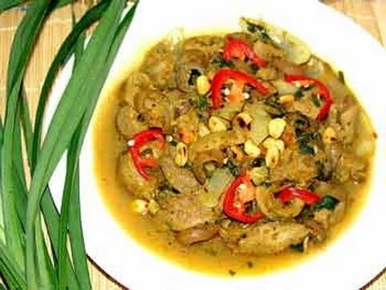

Nếu bạn muốn trổ tài chiêu đãi cả nhà món ăn ngon từ thịt chó này thì nên học ngay 2 cách ướp thịt chó xào lăn đơn giản mà đặc biệt này nhé.
1. Nguyên liệu:
2. Cách làm:
Hành tỏi bóc vỏ, đập dập; riềng, sả bỏ vỏ, giã nhỏ, vắt lấy nước. Mẻ, mắm tôm nghiền nhỏ lọc lấy nước
Thịt chó thái miếng to bản, ướp nước mắm, mắm tôm, mẻ, tương riềng, sả, để ngấm. Phi thơm hành tỏi, trút thịt vào xào cháy cạnh. Khi gần được, cho ít tiết loãng vào đảo đều đun chín. Tra vừa ăn, cho ra đĩa, ăn kèm rau ngổ, húng chó.